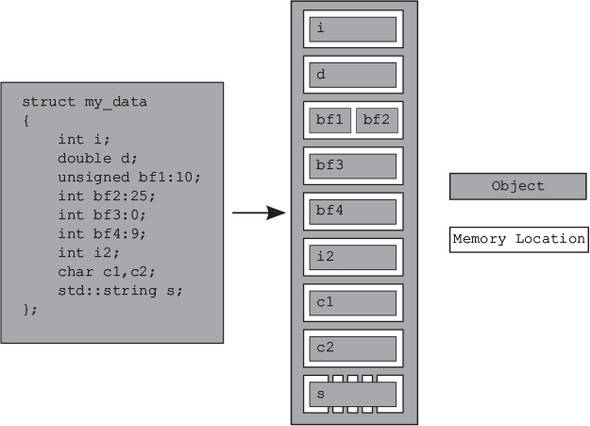
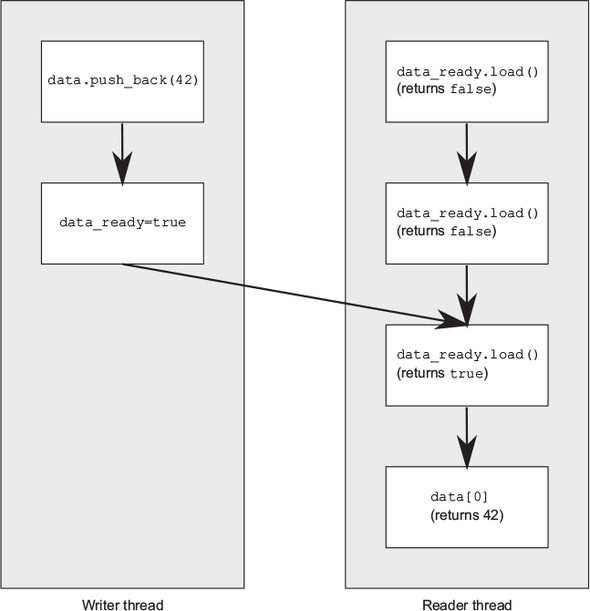
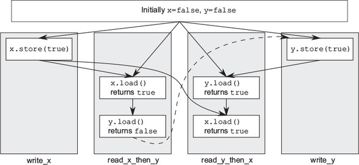
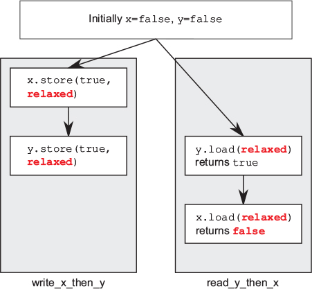
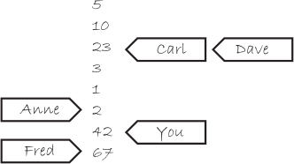
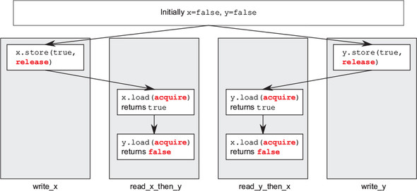
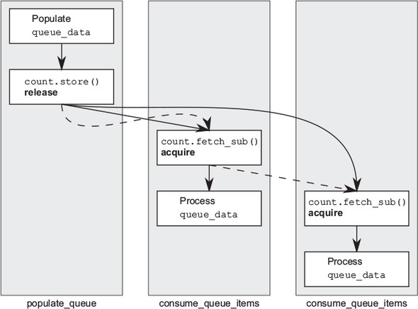

This chapter covers
One of the most important features of the C++ Standard is something most programmers won’t even notice. It’s not the new syntax features, nor is it the new library facilities, but the new multithreading-aware memory model. Without the memory model to define exactly how the fundamental building blocks work, none of the facilities I’ve covered could be relied on to work. There’s a reason that most programmers won’t notice: if you use mutexes to protect your data and condition variables, futures, latches, or barriers to signal events, the details of why they work aren’t important. It’s only when you start trying to get “close to the machine” that the precise details of the memory model matter.
Whatever else it is, C++ is a systems programming language. One of the goals of the Standards Committee is that there will be no need for a lower-level language than C++. Programmers should be provided with enough flexibility within C++ to do whatever they need without the language getting in the way, allowing them to get “close to the machine” when the need arises. The atomic types and operations allow just that, providing facilities for low-level synchronization operations that will commonly reduce to one or two CPU instructions.
In this chapter, I’ll start by covering the basics of the memory model, then move on to the atomic types and operations, and finally cover the various types of synchronization available with the operations on atomic types. This is quite complex: unless you’re planning on writing code that uses the atomic operations for synchronization (such as the lock-free data structures in chapter 7), you won’t need to know these details.
Let’s ease into things with a look at the basics of the memory model.
There are two aspects to the memory model: the basic structural aspects, which relate to how things are laid out in memory, and the concurrency aspects. The structural aspects are important for concurrency, particularly when you’re looking at low-level atomic operations, so I’ll start with those. In C++, it’s all about objects and memory locations.
All data in a C++ program is made up of objects. This is not to say that you can create a new class derived from int, or that the fundamental types have member functions, or any of the other consequences often implied when people say “everything is an object” when discussing a language like Smalltalk or Ruby. It’s a statement about the building blocks of data in C++. The C++ Standard defines an object as “a region of storage,” although it goes on to assign properties to these objects, such as their type and lifetime.
Some of these objects are simple values of a fundamental type such as int or float, whereas others are instances of user-defined classes. Some objects (such as arrays, instances of derived classes, and instances of classes with non-static data members) have sub-objects, but others don’t.
Whatever its type, an object is stored in one or more memory locations. Each memory location is either an object (or sub-object) of a scalar type such as unsigned short or my_class* or a sequence of adjacent bit fields. If you use bit fields, this is an important point to note: though adjacent bit fields are distinct objects, they’re still counted as the same memory location. Figure 5.1 shows how a struct divides into objects and memory locations.

First, the entire struct is one object that consists of several sub-objects, one for each data member. The bf1 and bf2 bit fields share a memory location, and the std::string object, s, consists of several memory locations internally, but otherwise each member has its own memory location. Note how the zero-length bit field bf3 (the name is commented out because zero-length bit fields must be unnamed) separates bf4 into its own memory location, but doesn’t have a memory location itself.
There are four important things to take away from this:
I’m sure you’re wondering what this has to do with concurrency, so let’s take a look.
Now, here’s the part that’s crucial for multithreaded applications in C++: everything hinges on those memory locations. If two threads access separate memory locations, there’s no problem: everything works fine. On the other hand, if two threads access the same memory location, then you have to be careful. If neither thread is updating the memory location, you’re fine; read-only data doesn’t need protection or synchronization. If either thread is modifying the data, there’s a potential for a race condition, as described in chapter 3.
In order to avoid the race condition, there has to be an enforced ordering between the accesses in the two threads. This could be a fixed ordering such that one access is always before the other, or it could be an ordering that varies between runs of the application, but guarantees that there is some defined ordering. One way to ensure there’s a defined ordering is to use mutexes as described in chapter 3; if the same mutex is locked prior to both accesses, only one thread can access the memory location at a time, so one must happen before the other (though, in general, you can’t know in advance which will be first). The other way is to use the synchronization properties of atomic operations (see section 5.2 for the definition of atomic operations) either on the same or other memory locations to enforce an ordering between the accesses in the two threads. The use of atomic operations to enforce an ordering is described in section 5.3. If more than two threads access the same memory location, each pair of accesses must have a defined ordering.
If there’s no enforced ordering between two accesses to a single memory location from separate threads, one or both of those accesses is not atomic, and if one or both is a write, then this is a data race and causes undefined behavior.
This statement is crucially important: undefined behavior is one of the nastiest corners of C++. According to the language standard, once an application contains any undefined behavior, all bets are off; the behavior of the complete application is now undefined, and it may do anything at all. I know of one case where a particular instance of undefined behavior caused someone’s monitor to catch fire. Although this is rather unlikely to happen to you, a data race is definitely a serious bug and should be avoided at all costs.
There’s another important point in that statement: you can also avoid the undefined behavior by using atomic operations to access the memory location involved in the race. This doesn’t prevent the race itself—which of the atomic operations touches the memory location first is still not specified—but it does bring the program back into the realm of defined behavior.
Before we look at atomic operations, there’s one more concept that’s important to understand about objects and memory locations: modification orders.
Every object in a C++ program has a modification order composed of all the writes to that object from all threads in the program, starting with the object’s initialization. In most cases this order will vary between runs, but in any given execution of the program all threads in the system must agree on the order. If the object in question isn’t one of the atomic types described in section 5.2, you’re responsible for making certain that there’s sufficient synchronization to ensure that threads agree on the modification order of each variable. If different threads see distinct sequences of values for a single variable, you have a data race and undefined behavior (see section 5.1.2). If you do use atomic operations, the compiler is responsible for ensuring that the necessary synchronization is in place.
This requirement means that certain kinds of speculative execution aren’t permitted, because once a thread has seen a particular entry in the modification order, subsequent reads from that thread must return later values, and subsequent writes from that thread to that object must occur later in the modification order. Also, a read of an object that follows a write to that object in the same thread must either return the value written or another value that occurs later in the modification order of that object. Although all threads must agree on the modification orders of each individual object in a program, they don’t necessarily have to agree on the relative order of operations on separate objects. See section 5.3.3 for more on the ordering of operations between threads.
So, what constitutes an atomic operation, and how can these be used to enforce ordering?
An atomic operation is an indivisible operation. You can’t observe such an operation half-done from any thread in the system; it’s either done or not done. If the load operation that reads the value of an object is atomic, and all modifications to that object are also atomic, that load will retrieve either the initial value of the object or the value stored by one of the modifications.
The flip side of this is that a non-atomic operation might be seen as half-done by another thread. If the non-atomic operation is composed of atomic operations (for example, assignment to a struct with atomic members), then other threads may observe some subset of the constituent atomic operations as complete, but others as not yet started, so you might observe or end up with a value that is a mixed-up combination of the various values stored. In any case, unsynchronized accesses to non-atomic variables form a simple problematic race condition, as described in chapter 3, but at this level it may constitute a data race (see section 5.1) and cause undefined behavior.
In C++, you need to use an atomic type to get an atomic operation in most cases, so let’s look at those.
The standard atomic types can be found in the <atomic> header. All operations on such types are atomic, and only operations on these types are atomic in the sense of the language definition, although you can use mutexes to make other operations appear atomic. In fact, the standard atomic types themselves might use such emulation: they (almost) all have an is_lock_free() member function, which allows the user to determine whether operations on a given type are done directly with atomic instructions (x.is_lock_free() returns true) or done by using a lock internal to the compiler and library (x.is_lock_free() returns false).
This is important to know in many cases—the key use case for atomic operations is as a replacement for an operation that would otherwise use a mutex for synchronization; if the atomic operations themselves use an internal mutex then the hoped-for performance gains will probably not materialize, and you might be better off using the easier-to-get-right mutex-based implementation instead. This is the case with lock-free data structures such as those discussed in chapter 7.
In fact, this is so important that the library provides a set of macros to identify at compile time whether the atomic types for the various integral types are lock-free. Since C++17, all atomic types have a static constexpr member variable, X::is_always_lock_free, which is true if and only if the atomic type X is lock-free for all supported hardware that the output of the current compilation might run on. For example, for a given target platform, std::atomic<int> might always be lock-free, so std::atomic<int>::is_always_lock_free will be true, but std::atomic<uintmax_t> might only be lock-free if the hardware the program ends up running on supports the necessary instructions, so this is a run-time property, and std::atomic<uintmax_t>::is_always_lock_free would be false when compiling for that platform.
The macros are ATOMIC_BOOL_LOCK_FREE, ATOMIC_CHAR_LOCK_FREE, ATOMIC_CHAR16_T_LOCK_FREE, ATOMIC_CHAR32_T_LOCK_FREE, ATOMIC_WCHAR_T_LOCK_FREE, ATOMIC_SHORT_LOCK_FREE, ATOMIC_INT_LOCK_FREE, ATOMIC_LONG_LOCK_FREE, ATOMIC_LLONG_LOCK_FREE, and ATOMIC_POINTER_LOCK_FREE. They specify the lock-free status of the corresponding atomic types for the specified built-in types and their unsigned counterparts (LLONG refers to long long, and POINTER refers to all pointer types). They evaluate to the value 0 if the atomic type is never lock-free, to the value 2 if the atomic type is always lock-free, and to the value 1 if the lock-free status of the corresponding atomic type is a runtime property as described previously.
The only type that doesn’t provide an is_lock_free() member function is std::atomic_flag. This type is a simple Boolean flag, and operations on this type are required to be lock-free; once you have a simple lock-free Boolean flag, you can use that to implement a simple lock and implement all the other atomic types using that as a basis. When I said simple, I meant it: objects of the std::atomic_flag type are initialized to clear, and they can then either be queried and set (with the test_and_set() member function) or cleared (with the clear() member function). That’s it: no assignment, no copy construction, no test and clear, no other operations at all.
The remaining atomic types are all accessed through specializations of the std::atomic<> class template and are a bit more full-featured but may not be lock-free (as explained previously). On most popular platforms it’s expected that the atomic variants of all the built-in types (such as std::atomic<int> and std::atomic <void*>) are indeed lock-free, but it isn’t required. As you’ll see shortly, the interface of each specialization reflects the properties of the type; bitwise operations such as &= aren’t defined for plain pointers, so they aren’t defined for atomic pointers either, for example.
In addition to using the std::atomic<> class template directly, you can use the set of names shown in table 5.1 to refer to the implementation-supplied atomic types. Because of the history of how atomic types were added to the C++ Standard, if you have an older compiler, these alternative type names may refer either to the corresponding std::atomic<> specialization or to a base class of that specialization, whereas in a compiler that fully supports C++17, these are always aliases for the corresponding std::atomic<> specializations. Mixing these alternative names with the direct naming of std::atomic<> specializations in the same program can therefore lead to nonportable code.
|
Corresponding specialization |
|
|---|---|
| atomic_bool | std::atomic<bool> |
| atomic_char | std::atomic<char> |
| atomic_schar | std::atomic<signed char> |
| atomic_uchar | std::atomic<unsigned char> |
| atomic_int | std::atomic<int> |
| atomic_uint | std::atomic<unsigned> |
| atomic_short | std::atomic<short> |
| atomic_ushort | std::atomic<unsigned short> |
| atomic_long | std::atomic<long> |
| atomic_ulong | std::atomic<unsigned long> |
| atomic_llong | std::atomic<long long> |
| atomic_ullong | std::atomic<unsigned long long> |
| atomic_char16_t | std::atomic<char16_t> |
| atomic_char32_t | std::atomic<char32_t> |
| atomic_wchar_t | std::atomic<wchar_t> |
As well as the basic atomic types, the C++ Standard Library also provides a set of typedefs for the atomic types corresponding to the various non-atomic Standard Library typedefs such as std::size_t. These are shown in table 5.2.
That’s a lot of types! There’s a rather simple pattern to it; for a standard typedef T, the corresponding atomic type is the same name with an atomic_ prefix: atomic_T. The same applies to the built-in types, except that signed is abbreviated as s, unsigned as u, and long long as llong. It’s generally simpler to say std::atomic<T> for whichever T you want to work with, rather than use the alternative names.
The standard atomic types are not copyable or assignable in the conventional sense, in that they have no copy constructors or copy assignment operators. They do, however, support assignment from and implicit conversion to the corresponding built-in types as well as direct load() and store() member functions, exchange(), compare_exchange_weak(), and compare_exchange_strong(). They also support the compound assignment operators where appropriate: +=, -=, *=, |=, and so on, and the integral types and std::atomic<> specializations for ++ and -- pointers support. These operators also have corresponding named member functions with the same functionality: fetch_add(), fetch_or(), and so on. The return value from the assignment operators and member functions is either the value stored (in the case of the assignment operators) or the value prior to the operation (in the case of the named functions). This avoids the potential problems that could stem from the usual habit of these assignment operators returning a reference to the object being assigned to. In order to get the stored value from these references, the code would have to perform a separate read, allowing another thread to modify the value between the assignment and the read and opening the door for a race condition.
The std::atomic<> class template isn’t only a set of specializations, though. It does have a primary template that can be used to create an atomic variant of a user-defined type. Because it’s a generic class template, the operations are limited to load(), store() (and assignment from and conversion to the user-defined type), exchange(), compare_exchange_weak(), and compare_exchange_strong().
Each of the operations on the atomic types has an optional memory-ordering argument which is one of the values of the std::memory_order enumeration. This argument is used to specify the required memory-ordering semantics. The std::memory_order enumeration has six possible values: std::memory_order_relaxed, std:: memory_order_acquire, std::memory_order_consume, std::memory_order_acq_rel, std::memory_order_release, and std::memory_order_seq_cst.
The permitted values for the memory ordering depend on the operation category. If you don’t specify an ordering value, then the default ordering is used, which is the strongest ordering: std::memory_order_seq_cst. The precise semantics of the memory-ordering options are covered in section 5.3. For now, it suffices to know that the operations are divided into three categories:
Let’s now look at the operations you can perform on each of the standard atomic types, starting with std::atomic_flag.
std::atomic_flag is the simplest standard atomic type, which represents a Boolean flag. Objects of this type can be in one of two states: set or clear. It’s deliberately basic and is intended as a building block only. As such, I’d never expect to see it in use, except under special circumstances. Even so, it will serve as a starting point for discussing the other atomic types, because it shows some of the general policies that apply to the atomic types.
Objects of the std::atomic_flag type must be initialized with ATOMIC_FLAG_INIT. This initializes the flag to a clear state. There’s no choice in the matter; the flag always starts clear:
std::atomic_flag f=ATOMIC_FLAG_INIT;
This applies no matter where the object is declared and what scope it has. It’s the only atomic type to require such special treatment for initialization, but it’s also the only type guaranteed to be lock-free. If the std::atomic_flag object has static storage duration, it’s guaranteed to be statically initialized, which means that there are no initialization-order issues; it will always be initialized by the time of the first operation on the flag.
Once you have your flag object initialized, there are only three things you can do with it: destroy it, clear it, or set it and query the previous value. These correspond to the destructor, the clear() member function, and the test_and_set() member function, respectively. Both the clear() and test_and_set() member functions can have a memory order specified. clear() is a store operation and so can’t have memory_order_acquire or memory_order_acq_rel semantics, but test_and_set() is a read-modify-write operation and so can have any of the memory-ordering tags applied. As with every atomic operation, the default for both is memory_order_seq_cst. For example:
f.clear(std::memory_order_release); 1 bool x=f.test_and_set(); 2
Here, the call to clear() 1 explicitly requests that the flag is cleared with release semantics, whereas the call to test_and_set() 2 uses the default memory ordering for setting the flag and retrieving the old value.
You can’t copy-construct another std::atomic_flag object from the first, and you can’t assign one std::atomic_flag to another. This isn’t something peculiar to std::atomic_flag but something common with all the atomic types. All operations on an atomic type are defined as atomic, and assignment and copy-construction involve two objects. A single operation on two distinct objects can’t be atomic. In the case of copy-construction or copy-assignment, the value must first be read from one object and then written to the other. These are two separate operations on two separate objects, and the combination can’t be atomic. Therefore, these operations aren’t permitted.
The limited feature set makes std::atomic_flag ideally suited to use as a spin-lock mutex. Initially, the flag is clear and the mutex is unlocked. To lock the mutex, loop on test_and_set() until the old value is false, indicating that this thread set the value to true. Unlocking the mutex is simply a matter of clearing the flag. This implementation is shown in the following listing.
class spinlock_mutex
{
std::atomic_flag flag;
public:
spinlock_mutex():
flag(ATOMIC_FLAG_INIT)
{}
void lock()
{
while(flag.test_and_set(std::memory_order_acquire));
}
void unlock()
{
flag.clear(std::memory_order_release);
}
};
This mutex is basic, but it’s enough to use with std::lock_guard<> (see chapter 3). By its nature it does a busy-wait in lock(), so it’s a poor choice if you expect there to be any degree of contention, but it’s enough to ensure mutual exclusion. When we look at the memory-ordering semantics, you’ll see how this guarantees the necessary enforced ordering that goes with a mutex lock. This example is covered in section 5.3.6.
std::atomic_flag is so limited that it can’t even be used as a general Boolean flag, because it doesn’t have a simple nonmodifying query operation. For that you’re better off using std::atomic<bool>, so I’ll cover that next.
The most basic of the atomic integral types is std::atomic<bool>. This is a more full-featured Boolean flag than std::atomic_flag, as you might expect. Although it’s still not copy-constructible or copy-assignable, you can construct it from a non-atomic bool, so it can be initially true or false, and you can also assign to instances of std::atomic<bool> from a non-atomic bool:
std::atomic<bool> b(true); b=false;
One other thing to note about the assignment operator from a non-atomic bool is that it differs from the general convention of returning a reference to the object it’s assigned to: it returns a bool with the value assigned instead. This is another common pattern with the atomic types: the assignment operators they support return values (of the corresponding non-atomic type) rather than references. If a reference to the atomic variable was returned, any code that depended on the result of the assignment would then have to explicitly load the value, potentially getting the result of a modification by another thread. By returning the result of the assignment as a non-atomic value, you can avoid this additional load, and you know that the value obtained is the value stored.
Rather than using the restrictive clear() function of std::atomic_flag, writes (of either true or false) are done by calling store(), although the memory-order semantics can still be specified. Similarly, test_and_set() has been replaced with the more general exchange() member function that allows you to replace the stored value with a new one of your choosing and atomically retrieve the original value. std::atomic<bool> also supports a plain nonmodifying query of the value with an implicit conversion to plain bool or with an explicit call to load(). As you might expect, store() is a store operation, whereas load() is a load operation. exchange() is a read-modify-write operation:
std::atomic<bool> b; bool x=b.load(std::memory_order_acquire); b.store(true); x=b.exchange(false,std::memory_order_acq_rel);
exchange() isn’t the only read-modify-write operation supported by std::atomic<bool>; it also introduces an operation to store a new value if the current value is equal to an expected value.
This new operation is called compare-exchange, and it comes in the form of the compare_exchange_weak() and compare_exchange_strong() member functions. The compare-exchange operation is the cornerstone of programming with atomic types; it compares the value of the atomic variable with a supplied expected value and stores the supplied desired value if they’re equal. If the values aren’t equal, the expected value is updated with the value of the atomic variable. The return type of the compare-exchange functions is a bool, which is true if the store was performed and false otherwise. The operation is said to succeed if the store was done (because the values were equal), and fail otherwise; the return value is true for success, and false for failure.
For compare_exchange_weak(), the store might not be successful even if the original value was equal to the expected value, in which case the value of the variable is unchanged and the return value of compare_exchange_weak() is false. This is most likely to happen on machines that lack a single compare-and-exchange instruction, if the processor can’t guarantee that the operation has been done atomically—possibly because the thread performing the operation was switched out in the middle of the necessary sequence of instructions and another thread scheduled in its place by the operating system where there are more threads than processors. This is called a spurious failure, because the reason for the failure is a function of timing rather than the values of the variables.
Because compare_exchange_weak() can fail spuriously, it must typically be used in a loop:
bool expected=false; extern atomic<bool> b; // set somewhere else while(!b.compare_exchange_weak(expected,true) && !expected);
In this case, you keep looping as long as expected is still false, indicating that the compare_exchange_weak() call failed spuriously.
On the other hand, compare_exchange_strong() is guaranteed to return false only if the value wasn’t equal to the expected value. This can eliminate the need for loops like the one shown where you want to know whether you successfully changed a variable or whether another thread got there first.
If you want to change the variable whatever the initial value is (perhaps with an updated value that depends on the current value), the update of expected becomes useful; each time through the loop, expected is reloaded, so if no other thread modifies the value in the meantime, the compare_exchange_weak() or compare_exchange_strong() call should be successful the next time around the loop. If the calculation of the value to be stored is simple, it may be beneficial to use compare_exchange_weak() in order to avoid a double loop on platforms where compare_exchange_weak() can fail spuriously (and so compare_exchange_strong() contains a loop). On the other hand, if the calculation of the value to be stored is time-consuming, it may make sense to use compare_exchange_strong() to avoid having to recalculate the value to store when the expected value hasn’t changed. For std::atomic<bool> this isn’t so important—there are only two possible values after all—but for the larger atomic types this can make a difference.
The compare-exchange functions are also unusual in that they can take two memory-ordering parameters. This allows for the memory-ordering semantics to differ in the case of success and failure; it might be desirable for a successful call to have memory_order_acq_rel semantics, whereas a failed call has memory_order_relaxed semantics. A failed compare-exchange doesn’t do a store, so it can’t have memory_order_release or memory_order_acq_rel semantics. It’s therefore not permitted to supply these values as the ordering for failure. You also can’t supply stricter memory ordering for failure than for success; if you want memory_order_acquire or memory_order_seq_cst semantics for failure, you must specify those for success as well.
If you don’t specify an ordering for failure, it’s assumed to be the same as that for success, except that the release part of the ordering is stripped: memory_order_release becomes memory_order_relaxed, and memory_order_acq_rel becomes memory_order_acquire. If you specify neither, they default to memory_order_seq_cst as usual, which provides the full sequential ordering for both success and failure. The following two calls to compare_exchange_weak() are equivalent:
std::atomic<bool> b;
bool expected;
b.compare_exchange_weak(expected,true,
memory_order_acq_rel,memory_order_acquire);
b.compare_exchange_weak(expected,true,memory_order_acq_rel);
I’ll leave the consequences of the choice of memory ordering to section 5.3.
One further difference between std::atomic<bool> and std::atomic_flag is that std::atomic<bool> may not be lock-free; the implementation may have to acquire a mutex internally in order to ensure the atomicity of the operations. For the rare case when this matters, you can use the is_lock_free() member function to check whether operations on std::atomic<bool> are lock-free. This is another feature common to all atomic types other than std::atomic_flag.
The next simplest of the atomic types are the atomic pointer specializations std::atomic<T*>, so we’ll look at those next.
The atomic form of a pointer to some type T is std::atomic<T*>, just as the atomic form of bool is std::atomic<bool>. The interface is the same, although it operates on values of the corresponding pointer type rather than bool values. Like std::atomic<bool>, it’s neither copy-constructible nor copy-assignable, although it can be both constructed and assigned from the suitable pointer values. As well as the obligatory is_lock_free() member function, std::atomic<T*> also has load(), store(), exchange(), compare_exchange_weak(), and compare_exchange_strong() member functions, with similar semantics to those of std::atomic<bool>, again taking and returning T* rather than bool.
The new operations provided by std::atomic<T*> are the pointer arithmetic operations. The basic operations are provided by the fetch_add() and fetch_sub() member functions, which do atomic addition and subtraction on the stored address, and the += and -= operators, and both pre- and post-increment and decrement with ++ and --, which provide convenient wrappers. The operators work as you’d expect from the built-in types: if x is std::atomic<Foo*> to the first entry of an array of Foo objects, then x+=3 changes it to point to the fourth entry and returns a plain Foo* that also points to that fourth entry. fetch_add() and fetch_sub() are slightly different in that they return the original value (so x.fetch_add(3) will update x to point to the fourth value but return a pointer to the first value in the array). This operation is also known as exchange-and-add, and it’s an atomic read-modify-write operation, like exchange() and compare_exchange_weak()/compare_exchange_strong(). As with the other operations, the return value is a plain T* value rather than a reference to the std::atomic<T*> object, so that the calling code can perform actions based on what the previous value was:
class Foo{};
Foo some_array[5];
std::atomic<Foo*> p(some_array);
Foo* x=p.fetch_add(2); 1
assert(x==some_array);
assert(p.load()==&some_array[2]);
x=(p-=1); 2
assert(x==&some_array[1]);
assert(p.load()==&some_array[1]);
The function forms also allow the memory-ordering semantics to be specified as an additional function call argument:
p.fetch_add(3,std::memory_order_release);
Because both fetch_add() and fetch_sub() are read-modify-write operations, they can have any of the memory-ordering tags and can participate in a release sequence. Specifying the ordering semantics isn’t possible for the operator forms, because there’s no way of providing the information: these forms therefore always have memory_order_seq_cst semantics.
The remaining basic atomic types are all the same: they’re all atomic integral types and have the same interface as each other, except that the associated built-in type is different. We’ll look at them as a group.
As well as the usual set of operations (load(), store(), exchange(), compare_exchange_weak(), and compare_exchange_strong()), the atomic integral types such as std::atomic<int> or std::atomic<unsigned long long> have quite a comprehensive set of operations available: fetch_add(), fetch_sub(), fetch_and(), fetch_or(), fetch_xor(), compound-assignment forms of these operations (+=, -=, &=, |=, and ^=), and pre- and post-increment and decrement (++x, x++, --x, and x--). It’s not quite the full set of compound-assignment operations you could do on a normal integral type, but it’s close enough: only division, multiplication, and shift operators are missing. Because atomic integral values are typically used either as counters or as bitmasks, this isn’t a particularly noticeable loss; additional operations can easily be done using compare_exchange_weak() in a loop, if required.
The semantics closely match those of fetch_add() and fetch_sub() for std::atomic<T*>; the named functions atomically perform their operation and return the old value, whereas the compound-assignment operators return the new value. Pre- and post- increment and decrement work as usual: ++x increments the variable and returns the new value, whereas x++ increments the variable and returns the old value. As you’ll be expecting, the result is a value of the associated integral type in both cases.
We’ve now looked at all the basic atomic types; all that remains is the generic std::atomic<> primary class template rather than the specializations, so let’s look at that next.
The presence of the primary template allows a user to create an atomic variant of a user-defined type, in addition to the standard atomic types. Given a user-defined type UDT, std::atomic<UDT> provides the same interface as std::atomic<bool> (as described in section 5.2.3), except that the bool parameters and return types that relate to the stored value (rather than the success/failure result of the compare-exchange operations) are UDT instead. You can’t use just any user-defined type with std::atomic<>, though; the type has to fulfill certain criteria. In order to use std::atomic<UDT> for some user-defined type UDT,, this type must have a trivial copy-assignment operator. This means that the type must not have any virtual functions or virtual base classes and must use the compiler-generated copy-assignment operator. Not only that, but every base class and non-static data member of a user-defined type must also have a trivial copy-assignment operator. This permits the compiler to use memcpy() or an equivalent operation for assignment operations, because there’s no user-written code to run.
Finally, it is worth noting that the compare-exchange operations do bitwise comparison as if using memcmp, rather than using any comparison operator that may be defined for UDT. If the type provides comparison operations that have different semantics, or the type has padding bits that do not participate in normal comparisons, then this can lead to a compare-exchange operation failing, even though the values compare equally.
The reasoning behind these restrictions goes back to one of the guidelines from chapter 3: don’t pass pointers and references to protected data outside the scope of the lock by passing them as arguments to user-supplied functions. In general, the compiler isn’t going to be able to generate lock-free code for std::atomic<UDT>, so it will have to use an internal lock for all the operations. If user-supplied copy-assignment or comparison operators were permitted, this would require passing a reference to the protected data as an argument to a user-supplied function, violating the guideline. Also, the library is entirely at liberty to use a single lock for all atomic operations that need it, and allowing user-supplied functions to be called while holding that lock might cause deadlock or cause other threads to block because a comparison operation took a long time. Finally, these restrictions increase the chance that the compiler will be able to make use of atomic instructions directly for std::atomic<UDT> (and make a particular instantiation lock-free), because it can treat the user-defined type as a set of raw bytes.
Note that although you can use std::atomic<float> or std::atomic<double>, because the built-in floating point types do satisfy the criteria for use with memcpy and memcmp, the behavior may be surprising in the case of compare_exchange_strong (compare_exchange_weak can always fail for arbitrary internal reasons, as described previously). The operation may fail even though the old stored value was equal in value to the comparand, if the stored value had a different representation. Note that there are no atomic arithmetic operations on floating-point values. You’ll get similar behavior with compare_exchange_strong if you use std::atomic<> with a user-defined type that has an equality-comparison operator defined, and that operator differs from the comparison using memcmp—the operation may fail because the otherwise-equal values have a different representation.
If your UDT is the same size as (or smaller than) an int or a void*, most common platforms will be able to use atomic instructions for std::atomic<UDT>. Some platforms will also be able to use atomic instructions for user-defined types that are twice the size of an int or void*. These platforms are typically those that support a so-called double-word-compare-and-swap (DWCAS) instruction corresponding to the compare_exchange_xxx functions. As you’ll see in chapter 7, such support can be helpful when writing lock-free code.
These restrictions mean that you can’t, for example, create std::atomic<std:: vector<int>> (because it has a non-trivial copy constructor and copy assignment operator), but you can instantiate std::atomic<> with classes containing counters or flags or pointers or even arrays of simple data elements. This isn’t particularly a problem; the more complex the data structure, the more likely you’ll want to do operations on it other than simple assignment and comparison. If that’s the case, you’re better off using an std::mutex to ensure that the data is appropriately protected for the desired operations, as described in chapter 3.
As already mentioned, when instantiated with a user-defined type T, the interface of std::atomic<T> is limited to the set of operations available for std::atomic<bool>: load(), store(), exchange(), compare_exchange_weak(), compare_exchange_strong(), and assignment from and conversion to an instance of type T.
Table 5.3 shows the operations available on each atomic type.
|
Operation |
atomic_flag |
atomic<bool> |
atomic<T*> |
atomic<integral-type> |
atomic<other-type> |
|---|---|---|---|---|---|
| test_and_set | Y | ||||
| clear | Y | ||||
| is_lock_free | Y | Y | Y | Y | |
| load | Y | Y | Y | Y | |
| store | Y | Y | Y | Y | |
| exchange | Y | Y | Y | Y | |
| compare_exchange_weak, compare_exchange_strong | Y | Y | Y | Y | |
| fetch_add, += | Y | Y | |||
| fetch_sub, -= | Y | Y | |||
| fetch_or, |= | Y | ||||
| fetch_and, &= | Y | ||||
| fetch_xor, ^= | Y | ||||
| ++, -- | Y | Y |
Up until now I’ve limited myself to describing the member function forms of the operations on the atomic types. But there are also equivalent nonmember functions for all the operations on the various atomic types. For the most part, the nonmember functions are named after the corresponding member functions but with an atomic_ prefix (for example, std::atomic_load()). These functions are then overloaded for each of the atomic types. Where there’s opportunity for specifying a memory-ordering tag, they come in two varieties: one without the tag and one with an _explicit suffix and an additional parameter or parameters for the memory-ordering tag or tags (for example, std::atomic_store(&atomic_var,new_value) versus std::atomic_store_explicit(&atomic_var,new_value,std::memory_order_release). Whereas the atomic object being referenced by the member functions is implicit, all the free functions take a pointer to the atomic object as the first parameter.
For example, std::atomic_is_lock_free() comes in one variety (though overloaded for each type), and std::atomic_is_lock_free(&a) returns the same value as a.is_lock_free() for an object of atomic type a. Likewise, std::atomic_load(&a) is the same as a.load(), but the equivalent of a.load(std::memory_order_acquire) is std::atomic_load_explicit(&a, std::memory_order_acquire).
The free functions are designed to be C-compatible, so they use pointers rather than references in all cases. For example, the first parameter of the compare_exchange_weak() and compare_exchange_strong() member functions (the expected value) is a reference, whereas the second parameter of std::atomic_compare_exchange_weak() (the first is the object pointer) is a pointer. std::atomic_compare_exchange_weak_explicit() also requires both the success and failure memory orders to be specified, whereas the compare-exchange member functions have both a single memory order form (with a default of std::memory_order_seq_cst) and an overload that takes the success and failure memory orders separately.
The operations on std::atomic_flag buck the trend in that they spell out the flag part in the names: std::atomic_flag_test_and_set(), std::atomic_flag_clear(). The additional variants that specify the memory ordering again have the _explicit suffix: std::atomic_flag_test_and_set_explicit() and std::atomic_flag_clear_explicit().
The C++ Standard Library also provides free functions for accessing instances of std::shared_ptr<> in an atomic fashion. This is a break from the principle that only the atomic types support atomic operations, because std::shared_ptr<> is quite definitely not an atomic type (accessing the same std::shared_ptr<T> object from multiple threads without using the atomic access functions from all threads, or using suitable other external synchronization, is a data race and undefined behavior). But the C++ Standards Committee felt it was sufficiently important to provide these extra functions. The atomic operations available are load, store, exchange, and compare-exchange, which are provided as overloads of the same operations on the standard atomic types, taking an std::shared_ptr<>* as the first argument:
std::shared_ptr<my_data> p;
void process_global_data()
{
std::shared_ptr<my_data> local=std::atomic_load(&p);
process_data(local);
}
void update_global_data()
{
std::shared_ptr<my_data> local(new my_data);
std::atomic_store(&p,local);
}
As with the atomic operations on other types, the _explicit variants are also provided to allow you to specify the desired memory ordering, and the std::atomic_is_lock_free() function can be used to check whether the implementation uses locks to ensure the atomicity.
The Concurrency TS also provides std::experimental::atomic_shared_ptr<T>, which is an atomic type. To use it you must include the <experimental/atomic> header. It provides the same set of operations as std::atomic<UDT>: load, store, exchange, compare-exchange. It is provided as a separate type because that allows for a lock-free implementation that does not impose an additional cost on plain std::shared_ptr instances. But as with the std::atomic template, you still need to check whether it is lock-free on your platform, which can be tested with the is_lock_free member function. Even if it is not lock-free, std::experimental::atomic_shared_ptr is to be recommended over using the atomic free functions on a plain std::shared_ptr, as it is clearer in your code, ensures that all accesses are atomic, and avoids the potential for data races due to forgetting to use the atomic free functions. As with all uses of atomic types and operations, if you are using them for a potential speed gain, it is important to profile, and compare with using alternative synchronization mechanisms.
As described in the introduction, the standard atomic types do more than avoid the undefined behavior associated with a data race; they allow the user to enforce an ordering of operations between threads. This enforced ordering is the basis of the facilities for protecting data and synchronizing operations such as std::mutex and std::future<>. With that in mind, let’s move on to the real meat of this chapter: the details of the concurrency aspects of the memory model and how atomic operations can be used to synchronize data and enforce ordering.
Suppose you have two threads, one of which is populating a data structure to be read by the second. In order to avoid a problematic race condition, the first thread sets a flag to indicate that the data is ready, and the second thread doesn’t read the data until the flag is set. The following listing shows such a scenario.
#include <vector>
#include <atomic>
#include <iostream>
std::vector<int> data;
std::atomic<bool> data_ready(false);
void reader_thread()
{
while(!data_ready.load()) 1
{
std::this_thread::sleep(std::chrono::milliseconds(1));
}
std::cout<<"The answer="<<data[0]<<"\n"; 2
}
void writer_thread()
{
data.push_back(42); 3
data_ready=true; 4
}
Setting aside the inefficiency of the loop waiting for the data to be ready 1, you need this to work, because otherwise sharing data between threads becomes impractical: every item of data is forced to be atomic. You’ve already learned that it’s undefined behavior to have non-atomic reads 2 and writes 3 accessing the same data without an enforced ordering, so for this to work there must be an enforced ordering somewhere.
The required enforced ordering comes from the operations on the std:: atomic<bool> variable, data_ready;, they provide the necessary ordering by virtue of the memory model relations happens-before and synchronizes-with. The write of the data 3 happens before the write to the data_ready flag 4, and the read of the flag 1 happens before the read of the data 2. When the value read from data_ready 1 is true, the write synchronizes with that read, creating a happens-before relationship. Because happens-before is transitive, the write to the data 3 happens before the write to the flag 4, which happens before the read of the true value from the flag 1, which happens before the read of the data 2, and you have an enforced ordering: the write of the data happens before the read of the data and everything is OK. Figure 5.2 shows the important happens-before relationships in the two threads. I’ve added a couple of iterations of the while loop from the reader thread.

All this might seem fairly intuitive: the operation that writes a value happens before an operation that reads that value. With the default atomic operations, that’s indeed true (which is why this is the default), but it does need spelling out: the atomic operations also have other options for the ordering requirements, which I’ll come to shortly.
Now that you’ve seen happens-before and synchronizes-with in action, it’s time to look at what they mean. I’ll start with synchronizes-with.
The synchronizes-with relationship is something that you can get only between operations on atomic types. Operations on a data structure (such as locking a mutex) might provide this relationship if the data structure contains atomic types and the operations on that data structure perform the appropriate atomic operations internally, but fundamentally it comes only from operations on atomic types.
The basic idea is this: a suitably-tagged atomic write operation, W, on a variable, x, synchronizes with a suitably-tagged atomic read operation on x that reads the value stored by either that write, W, or a subsequent atomic write operation on x by the same thread that performed the initial write, W, or a sequence of atomic read-modify-write operations on x (such as fetch_add() or compare_exchange_weak()) by any thread, where the value read by the first thread in the sequence is the value written by W (see section 5.3.4).
Leave the “suitably-tagged” part aside for now, because all operations on atomic types are suitably tagged by default. This means what you might expect: if thread A stores a value and thread B reads that value, there’s a synchronizes-with relationship between the store in thread A and the load in thread B, as in listing 5.2. This is illustrated in figure 5.2.
As I’m sure you’ve guessed, the nuances are all in the “suitably-tagged” part. The C++ memory model allows various ordering constraints to be applied to the operations on atomic types, and this is the tagging to which I refer. The various options for memory ordering and how they relate to the synchronizes-with relationship are covered in section 5.3.3. First, let’s step back and look at the happens-before relationship.
The happens-before and strongly-happens-before relationships are the basic building blocks of operation ordering in a program; it specifies which operations see the effects of which other operations. For a single thread, it’s largely straightforward: if one operation is sequenced before another, then it also happens before it, and strongly-happens-before it. This means that if one operation (A) occurs in a statement prior to another (B) in the source code, then A happens before B, and A strongly-happens-before B. You saw that in listing 5.2: the write to data 3 happens before the write to data_ready 4. If the operations occur in the same statement, in general there’s no happens-before relationship between them, because they’re unordered. This is another way of saying that the ordering is unspecified. You know that the program in the following listing will output "1,2" or "2,1", but it’s unspecified which, because the order of the two calls to get_num() is unspecified.
#include <iostream>
void foo(int a,int b)
{
std::cout<<a<<","<<b<<std::endl;
}
int get_num()
{
static int i=0;
return ++i;
}
int main()
{
foo(get_num(),get_num()); 1
}
There are circumstances where operations within a single statement are sequenced, such as where the built-in comma operator is used or where the result of one expression is used as an argument to another expression. But in general, operations within a single statement are nonsequenced, and there’s no sequenced-before (and thus no happens-before) relationship between them. All operations in a statement happen before all of the operations in the next statement.
This is a restatement of the single-threaded sequencing rules you’re used to, so what’s new? The new part is the interaction between threads: if operation A on one thread inter-thread happens before operation B on another thread, then A happens before B. This doesn’t help much: you’ve added a new relationship (inter-thread happens-before), but this is an important relationship when you’re writing multithreaded code.
At the basic level, inter-thread happens-before is relatively simple and relies on the synchronizes-with relationship introduced in section 5.3.1: if operation A in one thread synchronizes with operation B in another thread, then A inter-thread happens before B. It’s also a transitive relation: if A inter-thread happens before B and B inter-thread happens before C, then A inter-thread happens before C. You saw this in listing 5.2 as well.
Inter-thread happens-before also combines with the sequenced-before relation: if operation A is sequenced before operation B, and operation B inter-thread happens before operation C, then A inter-thread happens before C. Similarly, if A synchronizes with B and B is sequenced before C, then A inter-thread happens before C. These two together mean that if you make a series of changes to data in a single thread, you need only one synchronizes-with relationship for the data to be visible to subsequent operations on the thread that executed C.
The strongly-happens-before relationship is slightly different, but in most cases comes down the same. The same two rules described above apply: if operation A synchronizes-with operation B, or operation A is sequenced-before operation B, then A strongly-happens-before B. Transitive ordering also applies: if A strongly-happens-before B, and B strongly-happens-before C, then A strongly-happens-before C. The difference is that operations tagged with memory_order_consume (see section 5.3.3) participate in inter-thread-happens-before relationships (and thus happens-before relationships), but not in strongly-happens-before relationships. Since the vast majority of code should not be using memory_order_consume, this distinction is unlikely to affect you in practice. I will use “happens-before” in the rest of this book for brevity.
These are the crucial rules that enforce the ordering of operations between threads and make everything in listing 5.2 work. There are some additional nuances with data dependency, as you’ll see shortly. In order for you to understand this, I need to cover the memory-ordering tags used for atomic operations and how they relate to the synchronizes-with relation.
There are six memory ordering options that can be applied to operations on atomic types: memory_order_relaxed, memory_order_consume, memory_order_acquire, memory_order_release, memory_order_acq_rel, and memory_order_seq_cst. Unless you specify otherwise for a particular operation, the memory-ordering option for all operations on atomic types is memory_order_seq_cst, which is the most stringent of the available options. Although there are six ordering options, they represent three models: sequentially consistent ordering (memory_order_seq_cst), acquire-release ordering (memory_order_consume, memory_order_acquire, memory_order_release, and memory_order_acq_rel), and relaxed ordering (memory_order_relaxed).
These distinct memory-ordering models can have varying costs on different CPU architectures. For example, on systems based on architectures with fine control over the visibility of operations by processors other than the one that made the change, additional synchronization instructions can be required for sequentially consistent ordering over acquire-release ordering or relaxed ordering and for acquire-release ordering over relaxed ordering. If these systems have many processors, these additional synchronization instructions may take a significant amount of time, reducing the overall performance of the system. On the other hand, CPUs that use the x86 or x8664 architectures (such as the Intel and AMD processors common in desktop PCs) don’t require any additional instructions for acquire-release ordering beyond those necessary for ensuring atomicity, and even sequentially-consistent ordering doesn’t require any special treatment for load operations, although there’s a small additional cost on stores.
The availability of the distinct memory-ordering models allows experts to take advantage of the increased performance of the more fine-grained ordering relationships where they’re advantageous while allowing the use of the default sequentially-consistent ordering (which is considerably easier to reason about than the others) for those cases that are less critical.
In order to choose which ordering model to use, or to understand the ordering relationships in code that uses the different models, it’s important to know how the choices affect the program behavior. Let’s therefore look at the consequences of each choice for operation ordering and synchronizes-with.
The default ordering is named sequentially consistent because it implies that the behavior of the program is consistent with a simple sequential view of the world. If all operations on instances of atomic types are sequentially consistent, the behavior of a multithreaded program is as if all these operations were performed in some particular sequence by a single thread. This is by far the easiest memory ordering to understand, which is why it’s the default: all threads must see the same order of operations. This makes it easy to reason about the behavior of code written with atomic variables. You can write down all the possible sequences of operations by different threads, eliminate those that are inconsistent, and verify that your code behaves as expected in the others. It also means that operations can’t be reordered; if your code has one operation before another in one thread, that ordering must be seen by all other threads.
From the point of view of synchronization, a sequentially consistent store synchronizes with a sequentially consistent load of the same variable that reads the value stored. This provides one ordering constraint on the operation of two (or more) threads, but sequential consistency is more powerful than that. Any sequentially consistent atomic operations done after that load must also appear after the store to other threads in the system using sequentially consistent atomic operations. The example in listing 5.4 demonstrates this ordering constraint in action. This constraint doesn’t carry forward to threads that use atomic operations with relaxed memory orderings; they can still see the operations in a different order, so you must use sequentially consistent operations on all your threads in order to get the benefit.
This ease of understanding can come at a price, though. On a weakly-ordered machine with many processors, it can impose a noticeable performance penalty, because the overall sequence of operations must be kept consistent between the processors, possibly requiring extensive (and expensive!) synchronization operations between the processors. That said, some processor architectures (such as the common x86 and x86-64 architectures) offer sequential consistency relatively cheaply, so if you’re concerned about the performance implications of using sequentially consistent ordering, check the documentation for your target processor architectures.
The following listing shows sequential consistency in action. The loads and stores to x and y are explicitly tagged with memory_order_seq_cst, although this tag could be omitted in this case because it’s the default.
#include <atomic>
#include <thread>
#include <assert.h>
std::atomic<bool> x,y;
std::atomic<int> z;
void write_x()
{
x.store(true,std::memory_order_seq_cst); 1
}
void write_y()
{
y.store(true,std::memory_order_seq_cst); 2
}
void read_x_then_y()
{
while(!x.load(std::memory_order_seq_cst));
if(y.load(std::memory_order_seq_cst)) 3
++z;
}
void read_y_then_x()
{
while(!y.load(std::memory_order_seq_cst));
if(x.load(std::memory_order_seq_cst)) 4
++z;
}
int main()
{
x=false;
y=false;
z=0;
std::thread a(write_x);
std::thread b(write_y);
std::thread c(read_x_then_y);
std::thread d(read_y_then_x);
a.join();
b.join();
c.join();
d.join();
assert(z.load()!=0); 5
}
The assert 5 can never fire, because either the store to x 1 or the store to y 2 must happen first, even though it’s not specified which. If the load of y in read_x_then_y 3 returns false, the store to x must occur before the store to y, in which case the load of x in read_y_then_x 4 must return true, because the while loop ensures that the y is true at this point. Because the semantics of memory_order_seq_cst require a single total ordering over all operations tagged memory_order_seq_cst, there’s an implied ordering relationship between a load of y that returns false 3 and the store to y 1. For there to be a single total order, if one thread sees x==true and then subsequently sees y==false, this implies that the store to x occurs before the store to y in this total order.
Because everything is symmetrical, it could also happen the other way around, with the load of x 4 returning false, forcing the load of y 3 to return true. In both cases, z is equal to 1. Both loads can return true, leading to z being 2, but under no circumstances can z be 0.
The operations and happens-before relationships for the case that read_x_then_y sees x as true and y as false are shown in figure 5.3. The dashed line from the load of y in read_x_then_y to the store to y in write_y shows the implied ordering relationship required in order to maintain sequential consistency: the load must occur before the store in the global order of memory_order_seq_cst operations in order to achieve the outcomes given here.

Sequential consistency is the most straightforward and intuitive ordering, but it’s also the most expensive memory ordering because it requires global synchronization between all threads. On a multiprocessor system this may require extensive and time-consuming communication between processors.
In order to avoid this synchronization cost, you need to step outside the world of sequential consistency and consider using other memory orderings.
Once you step outside the nice sequentially-consistent world, things start to get complicated. The single biggest issue to get to grips with is probably the fact that there’s no longer a single global order of events. This means that different threads can see different views of the same operations, and any mental model you have of operations from different threads neatly interleaved one after the other must be thrown away. Not only do you have to account for things happening truly concurrently, but threads don’t have to agree on the order of events. In order to write (or even to understand) any code that uses a memory ordering other than the default memory_order_seq_cst, it’s absolutely vital to get your head around this. It’s not just that the compiler can reorder the instructions. Even if the threads are running the same bit of code, they can disagree on the order of events because of operations in other threads in the absence of explicit ordering constraints, because the different CPU caches and internal buffers can hold different values for the same memory. It’s so important I’ll say it again: threads don’t have to agree on the order of events.
Not only do you have to throw out mental models based on interleaving operations, you also have to throw out mental models based on the idea of the compiler or processor reordering the instructions. In the absence of other ordering constraints, the only requirement is that all threads agree on the modification order of each individual variable. Operations on distinct variables can appear in different orders on different threads, provided the values seen are consistent with any additional ordering constraints imposed.
This is best demonstrated by stepping completely outside the sequentially consistent world and using memory_order_relaxed for all operations. Once you’ve come to grips with that, you can move back to acquire-release ordering, which allows you to selectively introduce ordering relationships between operations and claw back some of your sanity.
Operations on atomic types performed with relaxed ordering don’t participate in synchronizes-with relationships. Operations on the same variable within a single thread still obey happens-before relationships, but there’s almost no requirement on ordering relative to other threads. The only requirement is that accesses to a single atomic variable from the same thread can’t be reordered; once a given thread has seen a particular value of an atomic variable, a subsequent read by that thread can’t retrieve an earlier value of the variable. Without any additional synchronization, the modification order of each variable is the only thing shared between threads that are using memory_order_relaxed.
To demonstrate how relaxed your relaxed operations can be, you need only two threads, as shown in the following listing.
#include <atomic>
#include <thread>
#include <assert.h>
std::atomic<bool> x,y;
std::atomic<int> z;
void write_x_then_y()
{
x.store(true,std::memory_order_relaxed); 1
y.store(true,std::memory_order_relaxed); 2
}
void read_y_then_x()
{
while(!y.load(std::memory_order_relaxed)); 3
if(x.load(std::memory_order_relaxed)) 4
++z;
}
int main()
{
x=false;
y=false;
z=0;
std::thread a(write_x_then_y);
std::thread b(read_y_then_x);
a.join();
b.join();
assert(z.load()!=0); 5
}
This time the assert 5 can fire, because the load of x 4 can read false, even though the load of y 3 reads true and the store of x 1 happens before the store of y 2. x and y are different variables, so there are no ordering guarantees relating to the visibility of values arising from operations on each.
Relaxed operations on different variables can be freely reordered provided they obey any happens-before relationships they’re bound by (for example, within the same thread). They don’t introduce synchronizes-with relationships. The happens-before relationships from listing 5.5 are shown in figure 5.4, along with a possible outcome. Even though there’s a happens-before relationship between the stores and between the loads, there isn’t one between either store and either load, and so the loads can see the stores out of order.

Let’s look at the slightly more complex example with three variables and five threads in the next listing.
#include <thread>
#include <atomic>
#include <iostream>
std::atomic<int> x(0),y(0),z(0); 1
std::atomic<bool> go(false); 2
unsigned const loop_count=10;
struct read_values
{
int x,y,z;
};
read_values values1[loop_count];
read_values values2[loop_count];
read_values values3[loop_count];
read_values values4[loop_count];
read_values values5[loop_count];
void increment(std::atomic<int>* var_to_inc,read_values* values)
{
while(!go) 3
std::this_thread::yield();
for(unsigned i=0;i<loop_count;++i)
{
values[i].x=x.load(std::memory_order_relaxed);
values[i].y=y.load(std::memory_order_relaxed);
values[i].z=z.load(std::memory_order_relaxed);
var_to_inc->store(i+1,std::memory_order_relaxed); 4
std::this_thread::yield();
}
}
void read_vals(read_values* values)
{
while(!go) 5
std::this_thread::yield();
for(unsigned i=0;i<loop_count;++i)
{
values[i].x=x.load(std::memory_order_relaxed);
values[i].y=y.load(std::memory_order_relaxed);
values[i].z=z.load(std::memory_order_relaxed);
std::this_thread::yield();
}
}
void print(read_values* v)
{
for(unsigned i=0;i<loop_count;++i)
{
if(i)
std::cout<<",";
std::cout<<"("<<v[i].x<<","<<v[i].y<<","<<v[i].z<<")";
}
std::cout<<std::endl;
}
int main()
{
std::thread t1(increment,&x,values1);
std::thread t2(increment,&y,values2);
std::thread t3(increment,&z,values3);
std::thread t4(read_vals,values4);
std::thread t5(read_vals,values5);
go=true; 6
t5.join();
t4.join();
t3.join();
t2.join();
t1.join();
print(values1); 7
print(values2);
print(values3);
print(values4);
print(values5);
}
This is a simple program. You have three shared global atomic variables 1 and five threads. Each thread loops 10 times, reading the values of the three atomic variables using memory_order_relaxed and storing them in an array. Three of the threads each update one of the atomic variables each time through the loop 4, whereas the other two threads read. Once all the threads have been joined, you print the values from the arrays stored by each thread 7.
The go atomic variable 2 is used to ensure that the threads all start the loop as near to the same time as possible. Launching a thread is an expensive operation, and without the explicit delay, the first thread may be finished before the last one has started. Each thread waits for go to become true before entering the main loop 3 and 5, and go is set to true only once all the threads have started 6.
One possible output from this program is as follows:
(0,0,0),(1,0,0),(2,0,0),(3,0,0),(4,0,0),(5,7,0),(6,7,8),(7,9,8),(8,9,8), (9,9,10) (0,0,0),(0,1,0),(0,2,0),(1,3,5),(8,4,5),(8,5,5),(8,6,6),(8,7,9),(10,8,9), (10,9,10) (0,0,0),(0,0,1),(0,0,2),(0,0,3),(0,0,4),(0,0,5),(0,0,6),(0,0,7),(0,0,8), (0,0,9) (1,3,0),(2,3,0),(2,4,1),(3,6,4),(3,9,5),(5,10,6),(5,10,8),(5,10,10), (9,10,10),(10,10,10) (0,0,0),(0,0,0),(0,0,0),(6,3,7),(6,5,7),(7,7,7),(7,8,7),(8,8,7),(8,8,9), (8,8,9)
The first three lines are the threads doing the updating, and the last two are the threads doing the reading. Each triplet is a set of the variables x, y, and z, in that order, from one pass through the loop. There are a few things to notice from this output:
This is a valid outcome for relaxed operations, but it’s not the only valid outcome. Any set of values that’s consistent with the three variables, each holding the values 0 to 10 in turn, and that has the thread incrementing a given variable printing the values 0 to 9 for that variable, is valid.
To understand how this works, imagine that each variable is a man in a cubicle with a notepad. On his notepad is a list of values. You can phone him and ask him to give you a value, or you can tell him to write down a new value. If you tell him to write down a new value, he writes it at the bottom of the list. If you ask him for a value, he reads you a number from the list.
The first time you talk to this man, if you ask him for a value, he may give you any value from the list he has on his pad at the time. If you then ask him for another value, he may give you the same one again or a value from farther down the list. He’ll never give you a value from farther up the list. If you tell him to write down a number and then subsequently ask him for a value, he’ll give you either the number you told him to write down or a number below that on the list.
Imagine for a moment that his list starts with the values 5, 10, 23, 3, 1, and 2. If you ask for a value, you could get any of those. If he gives you 10, then the next time you ask he could give you 10 again, or any of the later ones, but not 5. If you call him five times, he could say “10, 10, 1, 2, 2,” for example. If you tell him to write down 42, he’ll add it to the end of the list. If you ask him for a number again, he’ll keep telling you “42” until he has another number on his list and he feels like telling it to you.
Now, imagine your friend Carl also has this man’s number. Carl can also phone him and either ask him to write down a number or ask for one, and he applies the same rules to Carl as he does to you. He has only one phone, so he can only deal with one of you at a time, so the list on his pad is a nice straightforward list. But just because you got him to write down a new number doesn’t mean he has to tell it to Carl, and vice versa. If Carl asked him for a number and was told “23,” then just because you asked the man to write down 42 doesn’t mean he’ll tell that to Carl next time. He may tell Carl any of the numbers 23, 3, 1, 2, 42, or even the 67 that Fred told him to write down after you called. He could very well tell Carl “23, 3, 3, 1, 67” without being inconsistent with what he told you. It’s like he keeps track of which number he told to whom with a little moveable sticky note for each person, like in figure 5.5.

Now imagine that there’s not just one man in a cubicle but a whole cubicle farm, with loads of men with phones and notepads. These are all our atomic variables. Each variable has its own modification order (the list of values on the pad), but there’s no relationship between them at all. If each caller (you, Carl, Anne, Dave, and Fred) is a thread, then this is what you get when every operation uses memory_order_relaxed. There are a few additional things you can tell the man in the cubicle, such as “Write down this number, and tell me what was at the bottom of the list” (exchange) and “Write down this number if the number on the bottom of the list is that; otherwise tell me what I should have guessed” (compare_exchange_strong), but that doesn’t affect the general principle.
If you think about the program logic from listing 5.5, then write_x_then_y is like some guy calling up the man in cubicle x and telling him to write true, then calling up the man in cubicle y and telling him to write true. The thread running read_y_then_x repeatedly calls up the man in cubicle y asking for a value until he says true and then calls the man in cubicle x to ask for a value. The man in cubicle x is under no obligation to tell you any specific value off his list and is quite within his rights to say false.
This makes relaxed atomic operations difficult to deal with. They must be used in combination with atomic operations that feature stronger ordering semantics in order to be useful for inter-thread synchronization. I strongly recommend avoiding relaxed atomic operations unless they’re absolutely necessary, and even then using them only with extreme caution. Given the unintuitive results that can be achieved with only two threads and two variables in listing 5.5, it’s not hard to imagine the possible complexity when more threads and more variables are involved.
One way to achieve additional synchronization without the overhead of full-blown sequential consistency is to use acquire-release ordering.
Acquire-release ordering is a step up from relaxed ordering; there’s still no total order of operations, but it does introduce some synchronization. Under this ordering model, atomic loads are acquire operations (memory_order_acquire), atomic stores are release operations (memory_order_release), and atomic read-modify-write operations (such as fetch_add() or exchange()) are either acquire, release, or both (memory_order_acq_rel). Synchronization is pairwise between the thread that does the release and the thread that does the acquire. A release operation synchronizes-with an acquire operation that reads the value written. This means that different threads can still see different orderings, but these orderings are restricted. The following listing is a reworking of listing 5.4 using acquire-release semantics rather than sequentially-consistent ones.
#include <atomic>
#include <thread>
#include <assert.h>
std::atomic<bool> x,y;
std::atomic<int> z;
void write_x()
{
x.store(true,std::memory_order_release);
}
void write_y()
{
y.store(true,std::memory_order_release);
}
void read_x_then_y()
{
while(!x.load(std::memory_order_acquire));
if(y.load(std::memory_order_acquire)) 1
++z;
}
void read_y_then_x()
{
while(!y.load(std::memory_order_acquire));
if(x.load(std::memory_order_acquire)) 2
++z;
}
int main()
{
x=false;
y=false;
z=0;
std::thread a(write_x);
std::thread b(write_y);
std::thread c(read_x_then_y);
std::thread d(read_y_then_x);
a.join();
b.join();
c.join();
d.join();
assert(z.load()!=0); 3
}
In this case the assert 3 can fire (like in the relaxed-ordering case), because it’s possible for both the load of x 2 and the load of y 1 to read false. x and y are written by different threads, so the ordering from the release to the acquire in each case has no effect on the operations in the other threads.
Figure 5.6 shows the happens-before relationships from listing 5.7, along with a possible outcome where the two reading threads each have a different view of the world. This is possible because there’s no happens-before relationship to force an ordering, as described previously.

In order to see the benefit of acquire-release ordering, you need to consider two stores from the same thread, like in listing 5.5. If you change the store to y to use memory_order_release and the load from y to use memory_order_acquire like in the following listing, then you impose an ordering on the operations on x.
#include <atomic>
#include <thread>
#include <assert.h>
std::atomic<bool> x,y;
std::atomic<int> z;
void write_x_then_y()
{
x.store(true,std::memory_order_relaxed); 1
y.store(true,std::memory_order_release); 2
}
void read_y_then_x()
{
while(!y.load(std::memory_order_acquire)); 3
if(x.load(std::memory_order_relaxed)) 4
++z;
}
int main()
{
x=false;
y=false;
z=0;
std::thread a(write_x_then_y);
std::thread b(read_y_then_x);
a.join();
b.join();
assert(z.load()!=0); 5
}
Eventually, the load from y, 3 will see true as written by the store 2. Because the store uses memory_order_release and the load uses memory_order_acquire, the store synchronizes with the load. The store to x 1 happens before the store to y 2 because they’re in the same thread. Because the store to y synchronizes with the load from y, the store to x also happens before the load from y and by extension happens before the load from x 4. Thus, the load from x must read true, and the assert 5 can’t fire. If the load from y wasn’t in a while loop, this wouldn’t necessarily be the case; the load from y might read false, in which case there’d be no requirement on the value read from x. In order to provide any synchronization, acquire and release operations must be paired up. The value stored by a release operation must be seen by an acquire operation for either to have any effect. If either the store at 2 or the load at 3 was a relaxed operation, there’d be no ordering on the accesses to x, so there’d be no guarantee that the load at 4 would read true, and the assert could fire.
You can still think about acquire-release ordering in terms of our men with notepads in their cubicles, but you have to add more to the model. First, imagine that every store that’s done is part of some batch of updates, so when you call a man to tell him to write down a number, you also tell him which batch this update is part of: “Please write down 99, as part of batch 423.” For the last store in a batch, you tell this to the man too: “Please write down 147, which is the last store in batch 423.” The man in the cubicle will then duly write down this information, along with who gave him the value. This models a store-release operation. The next time you tell someone to write down a value, you increase the batch number: “Please write down 41, as part of batch 424.”
When you ask for a value, you now have a choice: you can either ask for a value (which is a relaxed load), in which case the man only gives you the number, or you can ask for a value and information about whether it’s the last in a batch (which models a load-acquire). If you ask for the batch information, and the value wasn’t the last in a batch, the man will tell you something like, “The number is 987, which is a ‘normal’ value,” whereas if it was the last in a batch, he’ll tell you something like “The number is 987, which is the last number in batch 956 from Anne.” Now, here’s where the acquire-release semantics kick in: if you tell the man all the batches you know about when you ask for a value, he’ll look down his list for the last value from any of the batches you know about and either give you that number or one further down the list.
How does this model acquire-release semantics? Let’s look at our example and see. First off, thread a is running write_x_then_y and says to the man in cubicle x, “Please write true as part of batch 1 from thread a,” which he duly writes down. Thread a then says to the man in cubicle y, “Please write true as the last write of batch 1 from thread a,” which he duly writes down. In the meantime, thread b is running read_y_then_x. Thread b keeps asking the man in box y for a value with batch information until he says “true.” It may have to ask many times, but eventually the man will say “true.” The man in box y doesn’t only say “true” though; he also says, “This is the last write in batch 1 from thread a.”
Now, thread b goes on to ask the man in box x for a value, but this time it says, “Please can I have a value, and by the way I know about batch 1 from thread a.” Now the man from cubicle x has to look down his list for the last mention of batch 1 from thread a. The only mention he has is the value true, which is also the last value on his list, so he must read out that value; otherwise, he’s breaking the rules of the game.
If you look at the definition of inter-thread happens-before back in section 5.3.2, one of the important properties is that it’s transitive: if A inter-thread happens before B and B inter-thread happens before C, then A inter-thread happens before C. This means that acquire-release ordering can be used to synchronize data across several threads, even when the “intermediate” threads haven’t touched the data.
In order to think about transitive ordering, you need at least three threads. The first thread modifies some shared variables and does a store-release to one of them. A second thread then reads the variable subject to the store-release with a load-acquire and performs a store-release on a second shared variable. Finally, a third thread does a load-acquire on that second shared variable. Provided that the load-acquire operations see the values written by the store-release operations to ensure the synchronizes-with relationships, this third thread can read the values of the other variables stored by the first thread, even if the intermediate thread didn’t touch any of them. This scenario is shown in the next listing.
std::atomic<int> data[5];
std::atomic<bool> sync1(false),sync2(false);
void thread_1()
{
data[0].store(42,std::memory_order_relaxed);
data[1].store(97,std::memory_order_relaxed);
data[2].store(17,std::memory_order_relaxed);
data[3].store(-141,std::memory_order_relaxed);
data[4].store(2003,std::memory_order_relaxed);
sync1.store(true,std::memory_order_release); 1
}
void thread_2()
{
while(!sync1.load(std::memory_order_acquire)); 2
sync2.store(true,std::memory_order_release); 3
}
void thread_3()
{
while(!sync2.load(std::memory_order_acquire)); 4
assert(data[0].load(std::memory_order_relaxed)==42);
assert(data[1].load(std::memory_order_relaxed)==97);
assert(data[2].load(std::memory_order_relaxed)==17);
assert(data[3].load(std::memory_order_relaxed)==-141);
assert(data[4].load(std::memory_order_relaxed)==2003);
}
Even though thread_2 only touches the variables sync1 2 and sync2 3, this is enough for synchronization between thread_1 and thread_3 to ensure that the asserts don’t fire. First off, the stores to data from thread_1 happens before the store to sync1 1 because they’re sequenced before it in the same thread. Because the load from sync1 1 is in a while loop, it will eventually see the value stored from thread_1 and form the second half of the release-acquire pair. Therefore, the store to sync1 happens before the final load from sync1 in the while loop. This load is sequenced before (and thus happens before) the store to sync2 3, which forms a release-acquire pair with the final load from the while loop in thread_3 4. The store to sync2 3 thus happens before the load 4, which happens before the loads from data. Because of the transitive nature of happens-before, you can chain it all together: the stores to data happen before the store to sync1 1, which happens before the load from sync1 2, which happens before the store to sync2 3, which happens before the load from sync2 4, which happens before the loads from data. Thus the stores to data in thread_1 happen before the loads from data in thread_3, and the asserts can’t fire.
In this case, you could combine sync1 and sync2 into a single variable by using a read-modify-write operation with memory_order_acq_rel in thread_2. One option would be to use compare_exchange_strong() to ensure that the value is updated only once the store from thread_1 has been seen:
std::atomic<int> sync(0);
void thread_1()
{
// ...
sync.store(1,std::memory_order_release);
}
void thread_2()
{
int expected=1;
while(!sync.compare_exchange_strong(expected,2,
std::memory_order_acq_rel))
expected=1;
}
void thread_3()
{
while(sync.load(std::memory_order_acquire)<2);
// ...
}
If you use read-modify-write operations, it’s important to pick which semantics you desire. In this case, you want both acquire and release semantics, so memory_order_acq_rel is appropriate, but you can use other orderings too. A fetch_sub operation with memory_order_acquire semantics doesn’t synchronize with anything, even though it stores a value, because it isn’t a release operation. Likewise, a store can’t synchronize with a fetch_or with memory_order_release semantics, because the read part of the fetch_or isn’t an acquire operation. Read-modify-write operations with memory_order_acq_rel semantics behave as both an acquire and a release, so a prior store can synchronize with such an operation, and it can synchronize with a subsequent load, as is the case in this example.
If you mix acquire-release operations with sequentially consistent operations, the sequentially consistent loads behave like loads with acquire semantics, and sequentially consistent stores behave like stores with release semantics. Sequentially consistent read-modify-write operations behave as both acquire and release operations. Relaxed operations are still relaxed but are bound by the additional synchronizes-with and consequent happens-before relationships introduced through the use of acquire-release semantics.
Despite the potentially non-intuitive outcomes, anyone who’s used locks has had to deal with the same ordering issues: locking a mutex is an acquire operation, and unlocking the mutex is a release operation. With mutexes, you learn that you must ensure that the same mutex is locked when you read a value as was locked when you wrote it, and the same applies here; your acquire and release operations have to be on the same variable to ensure an ordering. If data is protected with a mutex, the exclusive nature of the lock means that the result is indistinguishable from what it would have been had the lock and unlock been sequentially consistent operations. Similarly, if you use acquire and release orderings on atomic variables to build a simple lock, then from the point of view of code that uses the lock, the behavior will appear sequentially consistent, even though the internal operations are not.
If you don’t need the stringency of sequentially consistent ordering for your atomic operations, the pairwise synchronization of acquire-release ordering has the potential for a much lower synchronization cost than the global ordering required for sequentially consistent operations. The trade-off here is the mental cost required to ensure that the ordering works correctly and that the non-intuitive behavior across threads isn’t problematic.
In the introduction to this section I said that memory_order_consume was part of the acquire-release ordering model, but it was conspicuously absent from the preceding description. This is because memory_order_consume is special: it’s all about data dependencies, and it introduces the data-dependency nuances to the inter-thread happens-before relationship mentioned in section 5.3.2. It is also special in that the C++17 standard explicitly recommends that you do not use it. It is therefore only covered here for completeness: you should not use memory_order_consume in your code!
The concept of a data dependency is relatively straightforward: there is a data dependency between two operations if the second one operates on the result of the first. There are two new relations that deal with data dependencies: dependency-ordered-before and carries-a-dependency-to. Like sequenced-before, carries-a-dependency-to applies strictly within a single thread and models the data dependency between operations; if the result of an operation (A) is used as an operand for an operation (B), then A carries a dependency to B. If the result of operation A is a value of a scalar type such as an int, then the relationship still applies if the result of A is stored in a variable, and that variable is then used as an operand for operation B. This operation is also transitive, so if A carries a dependency to B, and B carries a dependency to C, then A carries a dependency to C.
On the other hand, the dependency-ordered-before relationship can apply between threads. It’s introduced by using atomic load operations tagged with memory_order_consume. This is a special case of memory_order_acquire that limits the synchronized data to direct dependencies; a store operation (A) tagged with memory_order_release, memory_order_acq_rel, or memory_order_seq_cst is dependency-ordered-before a load operation (B) tagged with memory_order_consume if the consume reads the value stored. This is as opposed to the synchronizes-with relationship you get if the load uses memory_order_acquire. If this operation (B) then carries a dependency to some operation (C), then A is also dependency-ordered-before C.
This wouldn’t do you any good for synchronization purposes if it didn’t affect the inter-thread happens-before relation, but it does: if A is dependency-ordered-before B, then A also inter-thread happens-before B.
One important use for this kind of memory ordering is where the atomic operation loads a pointer to some data. By using memory_order_consume on the load and memory_order_release on the prior store, you ensure that the pointed-to data is correctly synchronized, without imposing any synchronization requirements on any other nondependent data. The following listing shows an example of this scenario.
struct X
{
int i;
std::string s;
};
std::atomic<X*> p;
std::atomic<int> a;
void create_x()
{
X* x=new X;
x->i=42;
x->s="hello";
a.store(99,std::memory_order_relaxed); 1
p.store(x,std::memory_order_release); 2
}
void use_x()
{
X* x;
while(!(x=p.load(std::memory_order_consume))) 3
std::this_thread::sleep(std::chrono::microseconds(1));
assert(x->i==42); 4
assert(x->s=="hello"); 5
assert(a.load(std::memory_order_relaxed)==99); 6
}
int main()
{
std::thread t1(create_x);
std::thread t2(use_x);
t1.join();
t2.join();
}
Even though the store to a 1 is sequenced before the store to p 2, and the store to p is tagged memory_order_release, the load of p 3 is tagged memory_order_consume. This means that the store to p only happens before those expressions that are dependent on the value loaded from p. This means that the asserts on the data members of the X structure (4 and 5) are guaranteed not to fire, because the load of p carries a dependency to those expressions through the variable x. On the other hand, the assert on the value of a 6 may or may not fire; this operation isn’t dependent on the value loaded from p, and so there’s no guarantee on the value that’s read. This is particularly apparent because it’s tagged with memory_order_relaxed, as you’ll see.
Sometimes, you don’t want the overhead of carrying the dependency around. You want the compiler to be able to cache values in registers and reorder operations to optimize the code rather than fussing about the dependencies. In these scenarios, you can use std::kill_dependency() to explicitly break the dependency chain. std:: kill_dependency() is a simple function template that copies the supplied argument to the return value but breaks the dependency chain in doing so. For example, if you have a global read-only array, and you use std::memory_order_consume when retrieving an index into that array from another thread, you can use std::kill_dependency() to let the compiler know that it doesn’t need to reread the contents of the array entry, as in the following example:
int global_data[]={ ... };
std::atomic<int> index;
void f()
{
int i=index.load(std::memory_order_consume);
do_something_with(global_data[std::kill_dependency(i)]);
}
In real code, you should always use memory_order_acquire where you might be tempted to use memory_order_consume, and std::kill_dependency is unnecessary.
Now that I’ve covered the basics of the memory orderings, it’s time to look at the more complex parts of the synchronizes-with relation, which manifest in the form of release sequences.
Back in section 5.3.1, I mentioned that you could get a synchronizes-with relationship between a store to an atomic variable and a load of that atomic variable from another thread, even when there’s a sequence of read-modify-write operations between the store and the load, provided all the operations are suitably tagged. Now that I’ve covered the possible memory-ordering “tags,” I can elaborate on this. If the store is tagged with memory_order_release, memory_order_acq_rel, or memory_order_seq_cst, and the load is tagged with memory_order_consume, memory_order_acquire, or memory_order_seq_cst, and each operation in the chain loads the value written by the previous operation, then the chain of operations constitutes a release sequence and the initial store synchronizes with (for memory_order_acquire or memory_order_seq_cst) or is dependency-ordered-before (for memory_order_consume) the final load. Any atomic read-modify-write operations in the chain can have any memory ordering (even memory_order_relaxed).
To see what this means and why it’s important, consider atomic<int> being used as a count of the number of items in a shared queue, as in the following listing.
#include <atomic>
#include <thread>
std::vector<int> queue_data;
std::atomic<int> count;
void populate_queue()
{
unsigned const number_of_items=20;
queue_data.clear();
for(unsigned i=0;i<number_of_items;++i)
{
queue_data.push_back(i);
}
count.store(number_of_items,std::memory_order_release); 1
}
void consume_queue_items()
{
while(true)
{
int item_index;
if((item_index=count.fetch_sub(1,std::memory_order_acquire))<=0) 2
{
wait_for_more_items(); 3
continue;
}
process(queue_data[item_index-1]); 4
}
}
int main()
{
std::thread a(populate_queue);
std::thread b(consume_queue_items);
std::thread c(consume_queue_items);
a.join();
b.join();
c.join();
}
One way to handle things would be to have the thread that’s producing the data store the items in a shared buffer and then do count.store(number_of_items, memory_order_release) 1 to let the other threads know that data is available. The threads consuming the queue items might then do count.fetch_sub(1,memory_order_acquire) 2 to claim an item from the queue, prior to reading the shared buffer 4. Once the count becomes zero, there are no more items, and the thread must wait 3.
If there’s one consumer thread, this is fine; fetch_sub() is a read with memory_order_acquire semantics, and the store had memory_order_release semantics, so the store synchronizes with the load and the thread can read the item from the buffer. If there are two threads reading, the second fetch_sub() will see the value written by the first and not the value written by the store. Without the rule about the release sequence, this second thread wouldn’t have a happens-before relationship with the first thread, and it wouldn’t be safe to read the shared buffer unless the first fetch_sub() also had memory_order_release semantics, which would introduce unnecessary synchronization between the two consumer threads. Without the release sequence rule or memory_order_release on the fetch_sub operations, there would be nothing to require that the stores to the queue_data were visible to the second consumer, and you would have a data race. Thankfully, the first fetch_sub() does participate in the release sequence, and so the store() synchronizes with the second fetch_sub(). There’s still no synchronizes-with relationship between the two consumer threads. This is shown in figure 5.7. The dotted lines in figure 5.7 show the release sequence, and the solid lines show the happens-before relationships.

There can be any number of links in the chain, but provided they’re all read-modify-write operations such as fetch_sub(), the store() will still synchronize with each one that’s tagged memory_order_acquire. In this example, all the links are the same, and all are acquire operations, but they could be a mix of different operations with different memory-ordering semantics.
Although most of the synchronization relationships come from the memory-ordering semantics applied to operations on atomic variables, it’s also possible to introduce additional ordering constraints by using fences.
An atomic operations library wouldn’t be complete without a set of fences. These are operations that enforce memory-ordering constraints without modifying any data and are typically combined with atomic operations that use the memory_order_relaxed ordering constraints. Fences are global operations and affect the ordering of other atomic operations in the thread that executed the fence. Fences are also commonly called memory barriers, and they get their name because they put a line in the code that certain operations can’t cross. As you may recall from section 5.3.3, relaxed operations on separate variables can usually be freely reordered by the compiler or the hardware. Fences restrict this freedom and introduce happens-before and synchronizes-with relationships that weren’t present before.
Let’s start by adding a fence between the two atomic operations on each thread in listing 5.5, as shown in the following listing.
#include <atomic>
#include <thread>
#include <assert.h>
std::atomic<bool> x,y;
std::atomic<int> z;
void write_x_then_y()
{
x.store(true,std::memory_order_relaxed); 1
std::atomic_thread_fence(std::memory_order_release); 2
y.store(true,std::memory_order_relaxed); 3
}
void read_y_then_x()
{
while(!y.load(std::memory_order_relaxed)); 4
std::atomic_thread_fence(std::memory_order_acquire); 5
if(x.load(std::memory_order_relaxed)) 6
++z;
}
int main()
{
x=false;
y=false;
z=0;
std::thread a(write_x_then_y);
std::thread b(read_y_then_x);
a.join();
b.join();
assert(z.load()!=0); 7
}
The release fence 2 synchronizes with the acquire fence 5 because the load from y at 4 reads the value stored at 3. This means that the store to x at 1 happens before the load from x at 6, so the value read must be true and the assert at 7 won’t fire. This is in contrast to the original case without the fences where the store to and load from x weren’t ordered, and so the assert could fire. Note that both fences are necessary: you need a release in one thread and an acquire in another to get a synchronizes-with relationship.
In this case, the release fence 2 has the same effect as if the store to y 3 was tagged with memory_order_release rather than memory_order_relaxed. Likewise, the acquire fence 5 makes it as if the load from y 4 was tagged with memory_order_acquire. This is the general idea with fences: if an acquire operation sees the result of a store that takes place after a release fence, the fence synchronizes with that acquire operation; and if a load that takes place before an acquire fence sees the result of a release operation, the release operation synchronizes with the acquire fence. You can have fences on both sides, as in the example here, in which case if a load that takes place before the acquire fence sees a value written by a store that takes place after the release fence, the release fence synchronizes with the acquire fence.
Although the fence synchronization depends on the values read or written by operations before or after the fence, it’s important to note that the synchronization point is the fence itself. If you take write_x_then_y from listing 5.12 and move the write to x after the fence as follows, the condition in the assert is no longer guaranteed to be true, even though the write to x comes before the write to y:
void write_x_then_y()
{
std::atomic_thread_fence(std::memory_order_release);
x.store(true,std::memory_order_relaxed);
y.store(true,std::memory_order_relaxed);
}
These two operations are no longer separated by the fence and so are no longer ordered. It’s only when the fence comes between the store to x and the store to y that it imposes an ordering. The presence or absence of a fence doesn’t affect any enforced orderings on happens-before relationships that exist because of other atomic operations.
This example, and almost every other example so far in this chapter, is built entirely from variables with an atomic type. But the real benefit of using atomic operations to enforce an ordering is that they can enforce an ordering on non-atomic operations and avoid the undefined behavior of a data race, as you saw back in listing 5.2.
If you replace x from listing 5.12 with an ordinary non-atomic bool (as in the following listing), the behavior is guaranteed to be the same.
#include <atomic>
#include <thread>
#include <assert.h>
bool x=false; 1
std::atomic<bool> y;
std::atomic<int> z;
void write_x_then_y()
{
x=true; 2
std::atomic_thread_fence(std::memory_order_release);
y.store(true,std::memory_order_relaxed); 3
}
void read_y_then_x()
{
while(!y.load(std::memory_order_relaxed)); 4
std::atomic_thread_fence(std::memory_order_acquire);
if(x) 5
++z;
}
int main()
{
x=false;
y=false;
z=0;
std::thread a(write_x_then_y);
std::thread b(read_y_then_x);
a.join();
b.join();
assert(z.load()!=0); 6
}
The fences still provide an enforced ordering of the store to x 1 and the store to y 2, and the load from y 3 and the load from x 5, and there’s still a happens-before relationship between the store to x and the load from x, so the assert 6 still won’t fire. The store to 2 and load from y 3 still have to be atomic; otherwise, there would be a data race on y, but the fences enforce an ordering on the operations on x, once the reading thread has seen the stored value of y. This enforced ordering means that there’s no data race on x, even though it’s modified by one thread and read by another.
It’s not only fences that can order non-atomic operations. You saw the ordering effects back in listing 5.10 with a memory_order_release/memory_order_consume pair ordering non-atomic accesses to a dynamically allocated object, and many of the examples in this chapter could be rewritten with some of the memory_order_relaxed operations replaced with plain non-atomic operations instead.
Ordering of non-atomic operations through the use of atomic operations is where the sequenced-before part of happens-before becomes so important. If a non-atomic operation is sequenced before an atomic operation, and that atomic operation happens before an operation in another thread, the non-atomic operation also happens before that operation in the other thread. This is where the ordering of the operations on x in listing 5.13 comes from and why the example in listing 5.2 works. This is also the basis for the higher-level synchronization facilities in the C++ Standard Library, such as mutexes and condition variables. To see how this works, consider the simple spinlock mutex from listing 5.1.
The lock() operation is a loop on flag.test_and_set() using std::memory_order_acquire ordering, and the unlock() is a call to flag.clear() with std::memory_order_release ordering. When the first thread calls lock(), the flag is initially clear, so the first call to test_and_set() will set the flag and return false, indicating that this thread now has the lock, and terminating the loop. The thread is then free to modify any data protected by the mutex. Any other thread that calls lock() at this time will find the flag already set and will be blocked in the test_and_set() loop.
When the thread with the lock has finished modifying the protected data, it calls unlock(), which calls flag.clear() with std::memory_order_release semantics. This then synchronizes (see section 5.3.1) with a subsequent call to flag.test_and_set() from an invocation of lock() on another thread, because this call has std::memory_order_acquire semantics. Because the modification of the protected data is necessarily sequenced before the unlock() call, this modification happens before the unlock() and thus happens before the subsequent lock() call from the second thread (because of the synchronizes with relationship between the unlock() and the lock()) and happens before any accesses to that data from this second thread once it has acquired the lock.
Although other mutex implementations will have different internal operations, the basic principle is the same: lock() is an acquire operation on an internal memory location, and unlock() is a release operation on that same memory location.
Each of the synchronization mechanisms described in chapters 2, 3, and 4 will provide ordering guarantees in terms of the synchronizes-with relationship. This is what enables you to use them to synchronize your data, and provide ordering guarantees. The following are the synchronization relationships provided by these facilities:
In this chapter I’ve covered the low-level details of the C++ memory model and the atomic operations that provide the basis for synchronization between threads. This includes the basic atomic types provided by specializations of the std::atomic<> class template as well as the generic atomic interface provided by the primary std::atomic<> template and the std::experimental::atomic_shared_ptr<> template, the operations on these types, and the complex details of the various memory-ordering options.
We’ve also looked at fences and how they can be paired with operations on atomic types to enforce an ordering. Finally, we’ve come back to the beginning with a look at how the atomic operations can be used to enforce an ordering between non-atomic operations on separate threads, and the synchronization relationships provided by the higher-level facilities.
In the next chapter we’ll look at using the high-level synchronization facilities alongside atomic operations to design efficient containers for concurrent access, and we’ll write algorithms that process data in parallel.